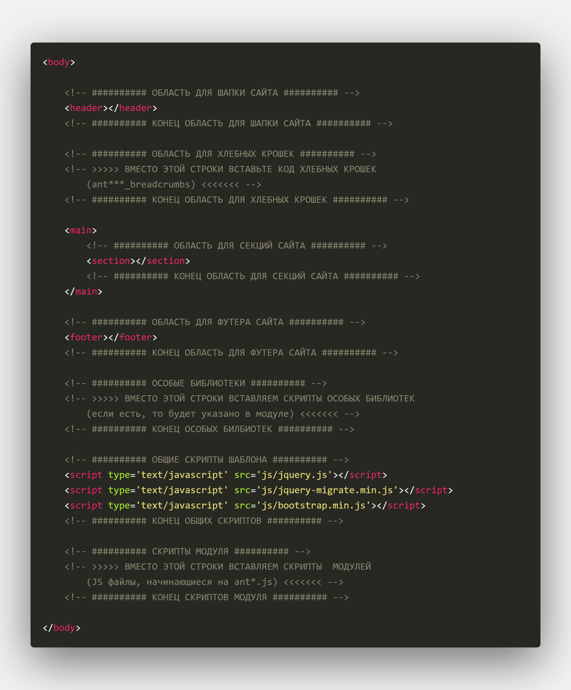
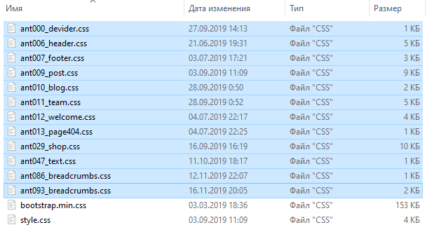
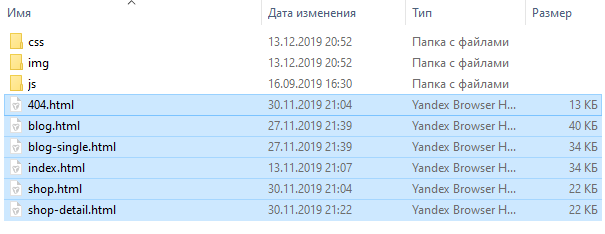
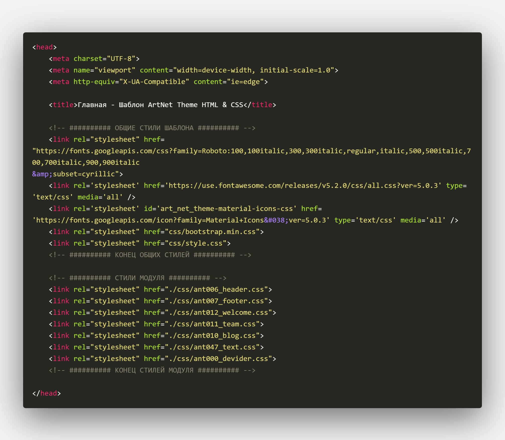
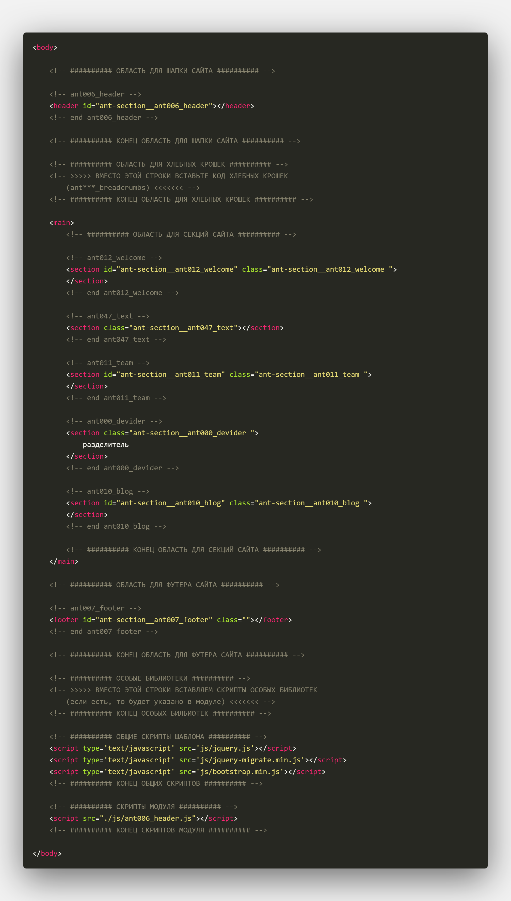

Инструкция по работе с шаблоном ArtNet Theme HTML
1. Начало работы:
Корректная работа шаблона подразумевает, что все пункты данной инструкции будут выполнены в строгом порядке.
Также подразумевается, что Вы владеете базовыми навыками HTML и CSS - на уровне копирования разметки и стилей, т. п.
Для комфортной работы с шаблоном рекомендуем использовать редактор Visual Studio Code.
Ниже представлена краткая инструкция по работе с шаблоном. Подробное руководство смотрите далее по документации.
1.1 Краткое руководство
Основная обертка шаблона имеет примитивную HTML-структуру и выглядит следующим образом:

Теги header, section и footer являются основными. На их местах будут распологаться соответствующие модули. Немного описания по поводу данных тегов:
- header (шапка сайта) - это классический верх сайта, как правило, с горизонтальным меню, контактами или прочей важной информацией. Модули шапок сайта имеют название, типа "ant006_header", чтобы было понятно, что речь идет о шапке сайта.
- breadcrumbs ("хлебные крошки" сайта) - карта навигации, показывает пользователю, где он сейчас находится. Обычно используется на внутренних страницах сайта.
- section (секции сайта) - это переиспользуемые модули из которых будет строиться Ваш сайт. Виды секций могут быть абсолютно разные: от слайдеров до контактных форм. Модули секций могут носить семантические имена, типа "ant030_slider", что говорит о наличия слайдера.
- footer (подвал сайта) - это классический низ сайта, как правило, с колонками меню, контактами или прочей информацией. Модули футеров сайта имеют название, типа "ant007_footer", чтобы было понятно, что речь идет о подвале сайта.
Вам необходимо будет просто вставлять в соответствующие места разметку модуля. Что и где размещать в коде будет показано в документации конкретного модуля.
1.2 Варианты стартового шаблона
- clear template - полностью чистая обертка, как на скриншоте выше. Начните добавлять модули с нуля.
-
default template - шаблон, в который уже включены модули по умолчанию. Глядя на этот пример,
вы сможете добавлять модули, как по образцу.

В него уже включены стандартные HTML-модули. Стили:

И сами страницы:

Для того, чтобы разобраться, как все устроено, достаточно просто открыть HTML-файлы в редакторе VS Code. Там Вы найдете аккуратную разметку и комментарии.
Содержимое тега head в файле default template/index.html:

И сам контент с подключенной разметкой (секции свернуты в редакторе):

2. Доступные варианты модулей:
В исходном формате тема содержит несколько общих и необходимых модулей для функционирования сайта. Все элементы, которые поставляются вместе с темой, являются бесплатным и считаются стандартными. Платные элементы поставляются в .zip-архивах и после их покупки.
В нашем Каталоге Вы сможете найти следующие типы модулей, которые можно добавлять в шаблон:
Шапка сайта - это, как правило, верхняя часть сайта. В нее могут быть включены логотип, меню, поиск, а также контактная и CTA-информация. Все модули шапок обернуты тегом header и подключаются перед тегом main.
Футер сайта - это, как правило, нижняя часть сайта. В нее могут быть включены логотип, меню, контакты, копирайт, разделы сайта, форма подписки и так далее. Все модули футеров обернуты тегом footer и подключаются после тега main.
Хлебные крошки сайта - обычно распологается под шапкой сайта Отражает текущее нахождение посетителя в структуре сайта.
Секции сайта - строительные блоки Вашего сайта. Их можно использовать в любом количестве и на любой странице, участвующей в шаблоне. Каждая секция имеет свой уникальный идентификатор, стили оформления, скрипты, параметры. Все секции подключаются внутри тега main.
Внутренние страницы - это все остальное оформление Вашего сайта. Здесь настраивается то, какой вид будет иметь страница записей, блога и т.д. Разметка модуля вставляется между тегами header и footer.
Страницы 404 - как правило, это креативное оформление страницы, когда пользователь получает ошибку 404 на Вашем сайте. Такие модули подключаются внутри тега main.
3. Ресурсы по умолчанию:
Шаблон использует самые популярные базовые инструменты - это Bootstrap и jQuery. Вы сможете самостоятельно добавлять в шаблон все, что захотите.
В шаблоне уже доступны следующие модули:
- ant006_header - Стандартный хедер сайта. Включает в себя меню и логотип.
- ant007_footer - Стандартный футер сайта. Включает в себя меню и логотип.
- ant086_breadcrumbs - Хлебные крошки вариант №1.
- ant093_breadcrumbs - Хлебные крошки вариант №2 (папка modules).
- ant000_devider - Разделитель вариант №1.
- ant081_devider - Разделитель вариант №2 (папка modules).
- ant082_devider - Разделитель вариант №3 (папка modules).
- ant083_devider - Разделитель вариант №4 (папка modules).
- ant010_blog - Стандартный блок новостей с коротким содержанием.
- ant012_welcome - Секция с фоновым изображением, вступительным текстом и CTA-кнопкой.
- ant011_team - Отображение сотрудников Вашей компании: имя, должность, ссылки на соц. сети.
- ant009_post - Стандартное оформление внутренних страниц сайта: записи, сайдбар, поиск и т.д.
- ant029_shop - Стандартное оформление странц магазина: категория и карточка товара;
- ant013_page404 - Стандартное оформление ошибки 404 на сайте. Простая инфомрация о том, что ничего не найдено и поиск.
В шаблон включены шрифтовые иконки Font Awesome и Material Icons.
Посмотреть, как это все организовано в коде можно в HTML-файлах папки default template/index.html.
Чистая главная страница доступна в clear template/index.html.
4. Что дальше?
После того, как Вы поняли алгоритм ручного построения шаблона, можно начать формировать свой уникальный вариант сайта. Построить примерный сайт можно в онлайн-конструкторе. Последовательность Ваших действий:
- Перейдите на страницу конструктора и выберите необходимые модули.
- Оформьте и оплатите заказ.
- В личном кабинете скачайте выбранные HTML-модули в .zip-архивах.
- Распакуйте все модули - каждый в отдельную папку. Ознакомьтесь с разметкой.
- Вернитесь в онлайн-конструктор и откройте окно с инструкцией.
- Следуя инструкциям в конструкторе и архиве подключите модуль к Вашему шаблону.
Каждый модуль будет содержать порядок действий, которые необходимо сделать для отображения элементов на сайте.
Если Вы обнаружили ошибки или недоработки в шаблоне и его модулях, обращайтесь в нашу техническую поддержку.